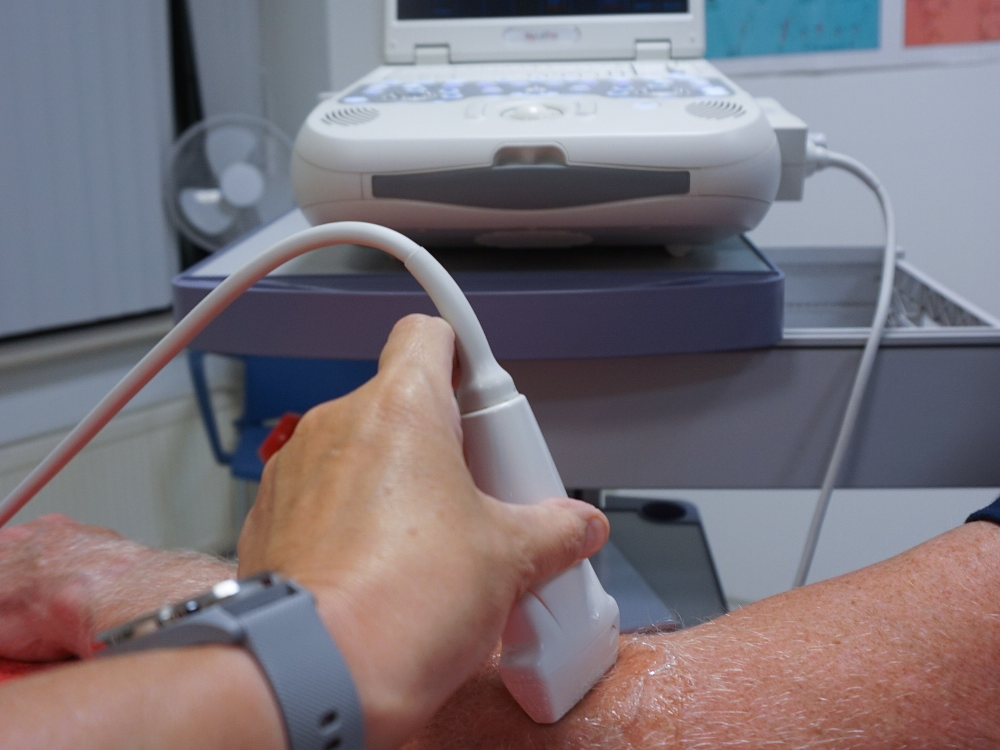

Echografie
Met echografie, of beter gezegd Musculo Skeletal Ultrasound, kunnen opnamen gemaakt worden van het houdings- en bewegingsapparaat. Hiermee bedoelen we de pezen, spieren, banden, slijmbeurzen, botten en gewrichten, die we vanaf de buitenkant niet kunnen zien. Tijdens een echografiebehandeling gaat de therapeut met een echokop over het lichaamsdeel waaraan u klachten ervaart. Op een beeldscherm wordt het onderzochte gebied in zwart-wit direct in beeld gebracht.
Wanneer gebruiken we echografie?
Echografie is vooral een toevoeging bij klachten die beginnen met irritaties van pezen; zoals afwijkingen aan de achillespees, tenniselleboog en peesirritatie in het schoudergewricht. Verkalking in pezen is met behulp van echografie rond de schouder ook goed zichtbaar. Ook de hielspoor of een slijmbeursontsteking kan met behulp van echografie zichtbaar worden gemaakt. Over het algemeen zijn de volgende aandoeningen met behulp van echografie te analyseren:
- verstuiking, verrekking of scheuring van gewrichtsbanden of het -kapsel
- een spierscheur of -kneuzing
- een peesblessure (bijvoorbeeld bij een gescheurde pees of bij een verkalking)
- een slijmbeursontsteking
Het echografisch onderzoek is een aanvulling op het fysiotherapeutisch onderzoek en kan veelal helpen bij het stellen van de juiste diagnose. Daarna kan een meer passende behandeling opgestart worden en kan ook tijdens het behandeltraject het herstel gevolgd worden door tijdens deze periode af en toe echografisch onderzoek te doen.
Bij De Merk zijn Frank en Jens opgeleid om met Musculo Skeletal Ultrasound te werken. Door zijn grote kennis over schouderklachten, bent u voor echo’s van de schouder goed af bij Frank. Maar beide mannen zijn vaardig om alle klachten te analyseren.